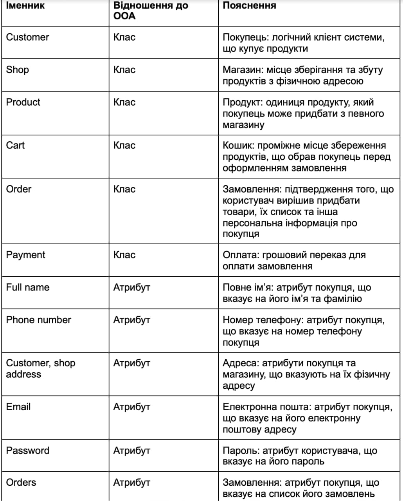

Опис об'єкта управління
Будь-який додаток-агрегатор для магазинів повинен мати доступ до бази даних доступних магазинів за певною категорією, що підпадає під тематику додатку. Найбільш зручною для отримання подібної інформації є прив’язка до сервісу онлайн-карт, наприклад Google Maps. За допомогою додатку користувачі зможуть дізнатись назву та місце розташування магазину, та його категорію. З допомогою вбудованого сервісу, вони можуть отримати додаткову інформацію про години роботи магазину, та інше. Додаток надаватиме перелік цих магазинів відповідно до фільтру обраного користувачем.
Магазини матимуть різні категорії, при чому в кожній категорії може бути багато, або не бути жодного магазину. Магазини мають перелік товарів, при цьому товар може бути як в наявності, так і відсутній. Також, є можливість перевірити наявність товару.
Кожен товар для ідентифікації містить свій унікальний код, та назву, яка відображатиметься у кошику. Окрім того, слід говорити і про ціну товару, що буде входити до оціночної вартості усього кошика. При детальному розгляді товару в магазині, можна буде переглянути його детальний опис та категорію(молочна продукція, бакалія, фрукти тощо). кожен унікальний продукт може бути придбаний лише одним покупцем, і належати лише до одного кошика. При придбанні унікальної одиниці товару вона видаляється з наявного переліку товарів цього виду.
При цьому в кошику одночасно може знаходитись багато товарів різних або однакових категорій на необмежену суму. При потраплянні товару до кошику він перестає бути наявним у магазині, проте у випадку непідтвердження замовлення він повертається назад. Кошик відображатиме загальну суму замовлення, і надаватиме можливість видалити товар. Кошик може взаємодіяти одночасно лише з одним магазином, і в магазину з покупцем може бути одночасно створений лише один кошик.
Якщо покупець хоче оформити замовлення, в кошику буде надана така можливість. Замовлення має свій унікальний номер для ідентифікації транзакцій товарообороту, та дату здійснення покупки. Відповідно до суті додатку, може бути декілька сценаріїв для оплати замовлення: оплата карткою в додатку, тоді покупцю потрібно буде ввести дані своєї платіжної картки, а система магазину зв’яжеться з платіжною системою для проведення транзакції. Поки замовлення не оплачено, його статус буде незмінним і показувати його як неоплачений. після підтвердження оплати, його статус зміниться і відправиться на опрацювання стороною магазину.
Покупець, для того щоб увійти в додаток, повинен надати свої базові паспортні дані, номер телефону для контакту та електронну пошту для зв'язку з ним, на яку можна буде відправити квитанцію. Також, електронна пошта потрібна для реєстрації в додатку та підтвердження входу. Для того, щоб мати можливість оплачувати замовлення, користувач повинен додати платіжну картку до свого профілю. Користувач, увійшовши в систему, матиме змогу переглядати список магазинів, обирати для вибору товарів будь-який з наявних магазинів, переглядати список товарів, та створювати замовлення, додаючи товари у кошик. Для користувача створюється тільки один кошик для попередження спотворення замовлень. При цьому, замовлень у користувача може бути безліч. Кожне замовлення буде пов'язане лише з одним магазином, тому неможливо буде створити замовлення з товарів різних магазинів.
Мета розробки проекту
- Прискорення пошуку спеціалізованих еко-магазинів та їх перегляду за певним критерієм
- Полегшення купівлі потрібних продуктів шляхом агрегації їх в одному додатку зі зручним пошуком, реалізація електронного кошика та електронного продажу
- Зручне відслідковування товарів в наявності для подальшої роботи магазину
- Легка обробка замовлення користувача адміністратором магазину, та внаслідок цього пришвидшена робота магазину
- збільшення кількості замовлень через охоплення більшої аудиторії.
Бізнес-задачі
- авторизація для можливості користування усіма функціями
- перегляд магазинів
- пошук, покупка та оплата товарів
- адміністрування магазину з боку продавця
- підтвердження оплати з боку банківської системи
Бізнес-процеси
- зареєструватись у магазині
- переглядати список магазинів
- переглядати список продуктів у магазині
- здійснювати покупку
- відправити платіж на підтвердження
- вивести список магазинів
- опрацювати платіж
Сценарії дії системи
Користувач
- Користувач авторизується в системі
- Переглядає список магазинів, що прив’язаний до геолокації, або обирає на карті
- Переглядає товари, що наявні в цьому магазині
- Обирає товари та додає до кошика
- Вводить дані платіжної картки для оформлення замовлення
- Надсилає замовлення на опрацювання в магазин
- Підтверджує оплату
- Після отримання повідомлення про оплату зі сторони банку, очікує повідомлення зі сторони магазину про подальше опрацювання зробленого замовлення
- При потребі повторює операцію з іншим магазином
- Отримує замовлення на адресу, вказану при реєстрації
Таблиця обґрунтування класів

Таблиця обґрунтування методів
Діаграма об'єктів
Функціональні вимоги замовника - UML-діаграми
Діаграма класів
Моделювання процесу замовлення продуктів в еко-магазині. Було створено 6 класів та побудовані зв’язки між ними:
- Order-Customer - композиція, оскільки замовлення не може існувати без користувача
- Order-Payment - композиція, оплата є частиною замовлення і не існує без нього
- Order-Cart - асоціація, замовлення не залежить від кошика
- Customer-Cart - агрегація, кошик може належати користувачеві
- Cart-Product - агрегація, кошик може містити в собі продукти
- Cart-Shop - асоціація, кошик і магазин - незалежні між собою сутності
- Product-Shop - композиція, продукти зберігаються в магазині
- Customer-Shop - асоціація, покупець і магазин - незалежні між собою сутності
Файлова структура
Посилання на репозиторій
GitHub